titanic.csv 891명 표본에 대한 탐색적 분석. 데이터 구조 파악 →
가설 13개 수립 → 가설별 기술통계 차트 검토까지의 결과를 정리한다.
표본 891명에서 관측된 것
분석 전체를 관통하는 결론은 세 문장으로 줄일 수 있다.
Cabin 기록 유무와 승선 항구는
등급을 통제해도 차이가 남아, 추가 조사 대상으로 남는다.891행 × 12열 · Kaggle 타이타닉 대회 train.csv와 동일 · 한 행 = 승객 한 명
| 컬럼 | 의미 | 타입 | 실제 값 |
|---|---|---|---|
PassengerId | 행 번호(식별자) | 정수 | 1–891, 중복 없음 |
Survived | 생존 여부 (타깃) | 0/1 | 사망 549 · 생존 342 |
Pclass | 객실 등급 (사회경제적 지위 대리) | 1/2/3 순서형 | 216 / 184 / 491 |
Name | 이름 | 문자열 | 891개 고유, "성, 호칭. 이름" |
Sex | 성별 | male/female | 남 577 · 여 314 |
Age | 나이 | 실수 | 0.42–80, 평균 29.7 |
SibSp | 동승 형제자매 + 배우자 | 정수 | 0이 608명, 최대 8 |
Parch | 동승 부모 + 자녀 | 정수 | 0이 678명, 최대 6 |
Ticket | 티켓 번호 | 문자열 | 681종 — 일행이 번호 공유 |
Fare | 요금 (파운드) | 실수 | 0–512.33, 평균 32.2 |
Cabin | 객실 번호 | 문자열 | 147종, 앞 글자가 갑판 |
Embarked | 승선 항구 | C/Q/S | S 644 · C 168 · Q 77 |
| 컬럼 | 결측 수 | 비율 | 성격 |
|---|---|---|---|
Cabin | 687 | 77.1% | 무작위 아님 — 1등석에 쏠려 있다. 그래서 피처가 된다 (H10) |
Age | 177 | 19.9% | 대치 방법이 H1 결론을 바꿀 수 있어 본 분석에서는 제외 처리 |
Embarked | 2 | 0.2% | 제외해도 무방한 규모 |
Fare는 1인당이 아니라 티켓 단위 합계다 — 정규화 전에는 가족 규모와 교락된다.
② Age의 0.42는 생후 5개월, .5로 끝나는 18건은 추정치다.
③ Name의 호칭은 성별·결혼 여부·연령대를 동시에 담은 정보다 (H12).
④ Cabin 결측은 무작위가 아니라 등급 정보를 담고 있다 (H10).
이후 모든 가설의 기본 질문은 "성별과 등급을 통제해도 효과가 남는가"였다
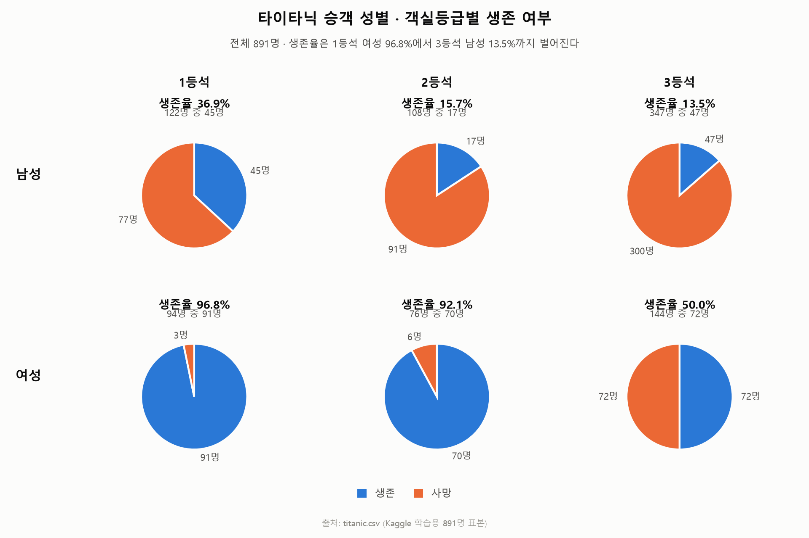
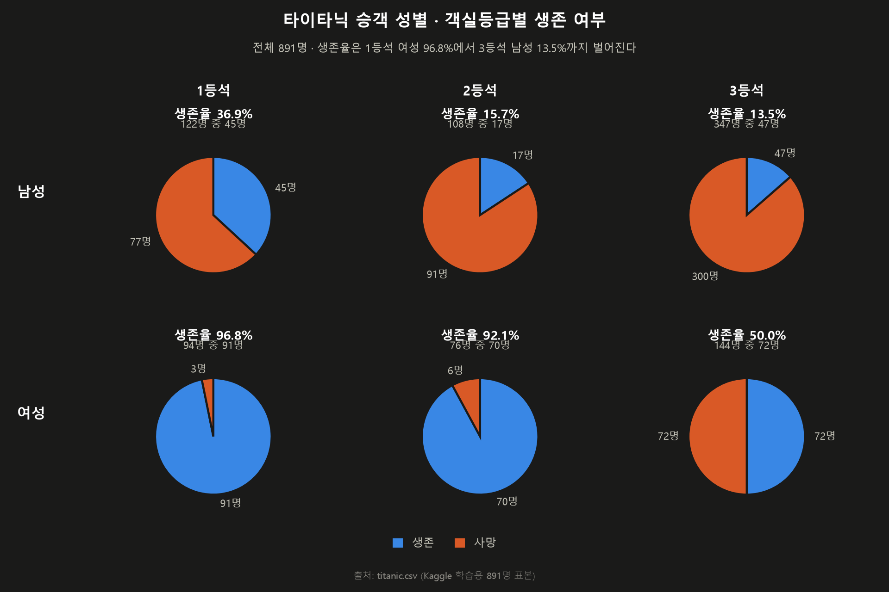
| 구분 | 생존 | 사망 | 합계 | 생존율 |
|---|---|---|---|---|
| 남성 1등석 | 45 | 77 | 122 | 36.9% |
| 남성 2등석 | 17 | 91 | 108 | 15.7% |
| 남성 3등석 | 47 | 300 | 347 | 13.5% |
| 여성 1등석 | 91 | 3 | 94 | 96.8% |
| 여성 2등석 | 70 | 6 | 76 | 92.1% |
| 여성 3등석 | 72 | 72 | 144 | 50.0% |
| 합계 | 342 | 549 | 891 | 38.4% |
두 변수의 순서가 중요하다. 성별 격차(55.3%p)가 등급 격차(1등석 62.9% vs 3등석 24.2%, 38.7%p)보다 크고, 결정적으로 3등석 여성 50.0%가 1등석 남성 36.9%를 넘는다. 등급 효과는 여성 쪽에서 훨씬 가파르다 — 여성은 90%대에서 50%로 떨어지는 반면 남성은 2·3등석이 15.7% / 13.5%로 거의 차이가 없다.
가설: 어린이는 같은 성별·등급의 성인보다 생존율이 높다 / 그 효과는 3등석에서 약하다
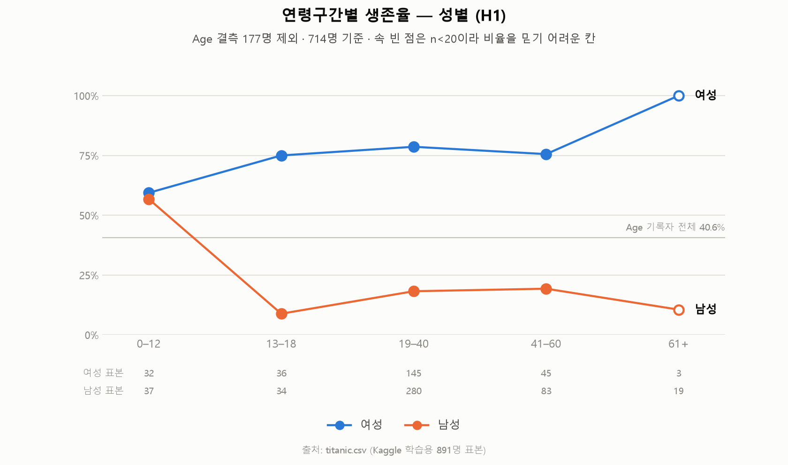
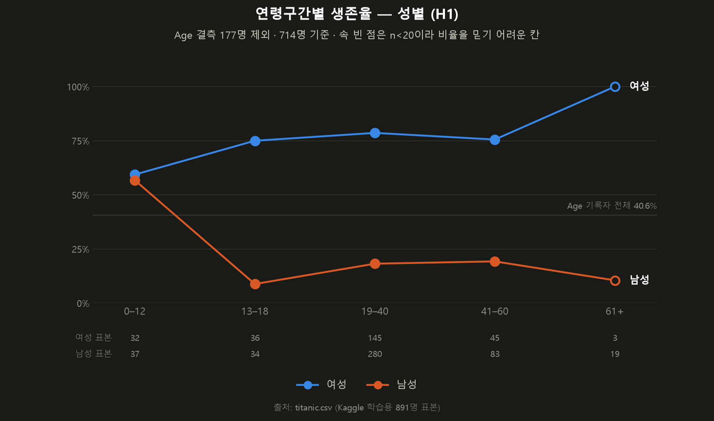
| 성별 | 0–12 | 13–18 | 19–40 | 41–60 | 61+ |
|---|---|---|---|---|---|
| 여성 | 59.4% (32) | 75.0% (36) | 78.6% (145) | 75.6% (45) | 100% (3) |
| 남성 | 56.8% (37) | 8.8% (34) | 18.2% (280) | 19.3% (83) | 10.5% (19) |
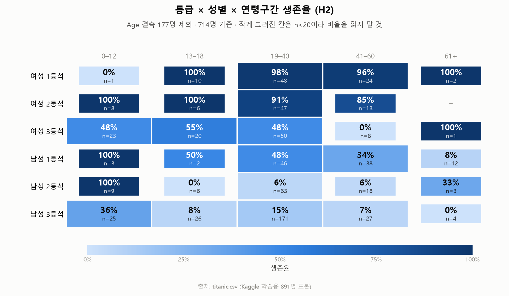
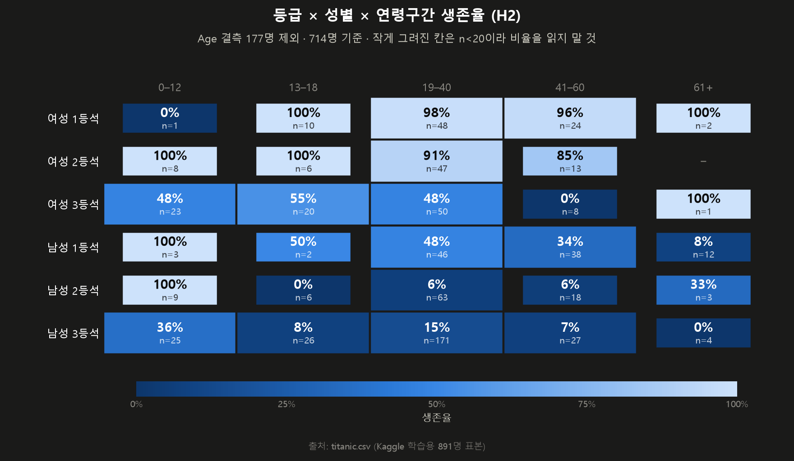
가설: Name에서 뽑은 호칭은 성별+연령+신분을 합친 단일 변수로, Sex보다 설명력이 높다
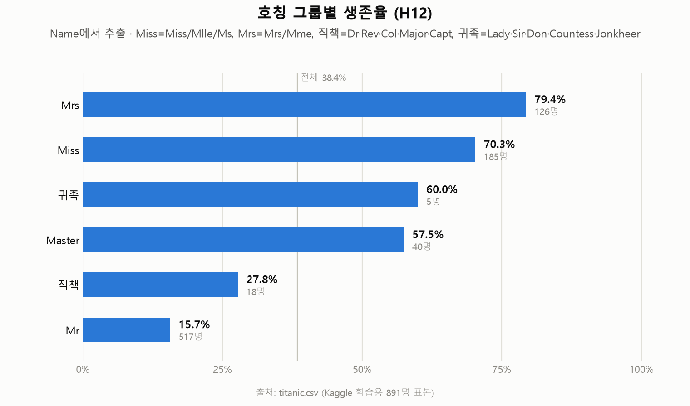
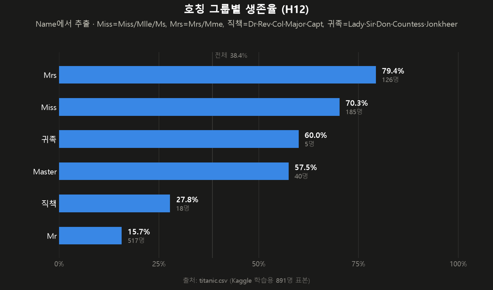
| 호칭 그룹 | 포함 | 인원 | 생존율 |
|---|---|---|---|
| Mrs | Mrs, Mme | 126 | 79.4% |
| Miss | Miss, Mlle, Ms | 185 | 70.3% |
| 귀족 | Lady, Sir, Don, the Countess, Jonkheer | 5 | 60.0% |
| Master | Master | 40 | 57.5% |
| 직책 | Dr, Rev, Col, Major, Capt | 18 | 27.8% |
| Mr | Mr | 517 | 15.7% |
Sex 하나로는 잡히지 않는 정보가 호칭에 있다는 뜻이다.Sex보다 설명력이 높다"는 아직 미검증. 이건 모형 적합도 비교가 필요하다.가설: 같은 Ticket 번호는 일행을 뜻하고, 일행의 생사는 함께 움직인다
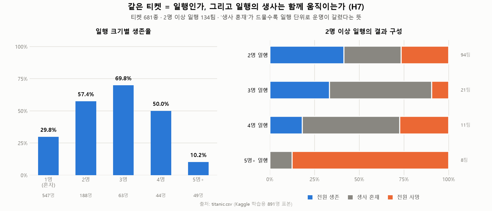
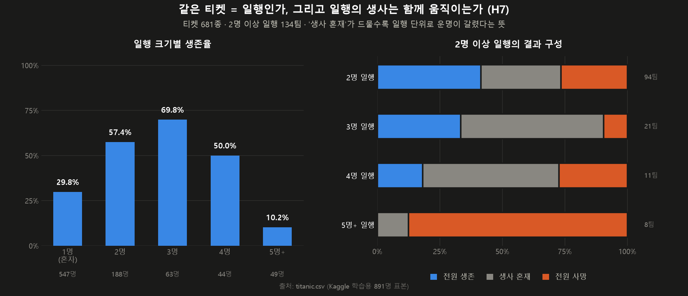
SibSp·Parch로는 잡히지 않는 동행(친구·하인·유모)까지 포착한다.| 일행 크기 | 전원 생존 | 생사 혼재 | 전원 사망 | 팀 수 | 혼재 비율 |
|---|---|---|---|---|---|
| 2명 | 39 | 30 | 25 | 94 | 31.9% |
| 3명 | 7 | 12 | 2 | 21 | 57.1% |
| 4명 | 2 | 6 | 3 | 11 | 54.5% |
| 5명+ | 0 | 1 | 7 | 8 | 12.5% |
가설: Cabin이 결측이라는 사실 자체가 생존과 연관이 있다
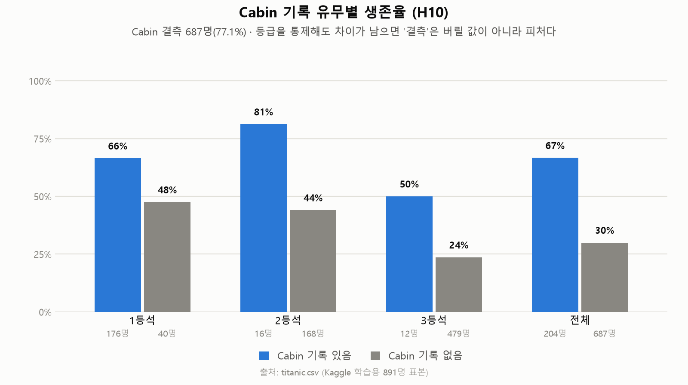
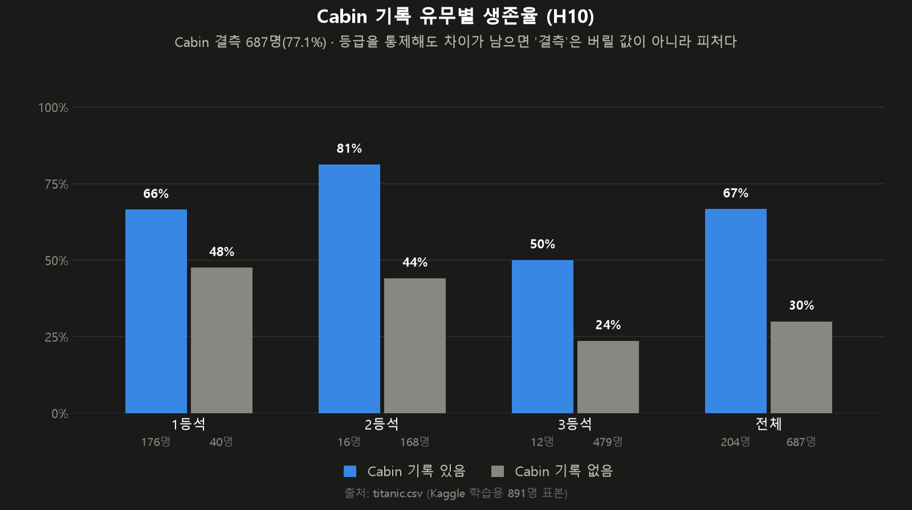
| 등급 | 기록 있음 | 기록 없음 | 차이 |
|---|---|---|---|
| 1등석 | 66.5% (176) | 47.5% (40) | +19.0%p |
| 2등석 | 81.2% (16) | 44.0% (168) | +37.2%p |
| 3등석 | 50.0% (12) | 23.6% (479) | +26.4%p |
| 전체 | 66.7% (204) | 30.0% (687) | +36.7%p |
HasCabin은 등급의 그림자만은 아니다 — 버릴 값이 아니라 피처다.가설: 혼자 탄 승객은 생존율이 낮다 / 가족 규모와 생존율은 역U자 관계다
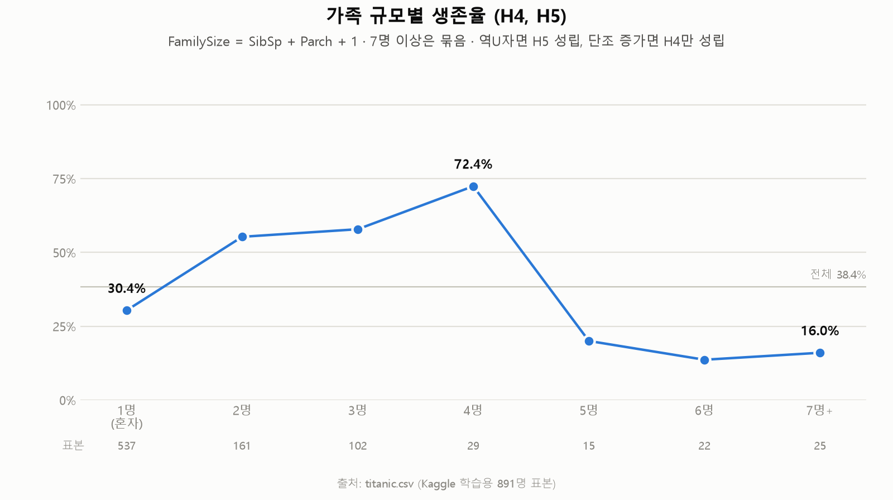
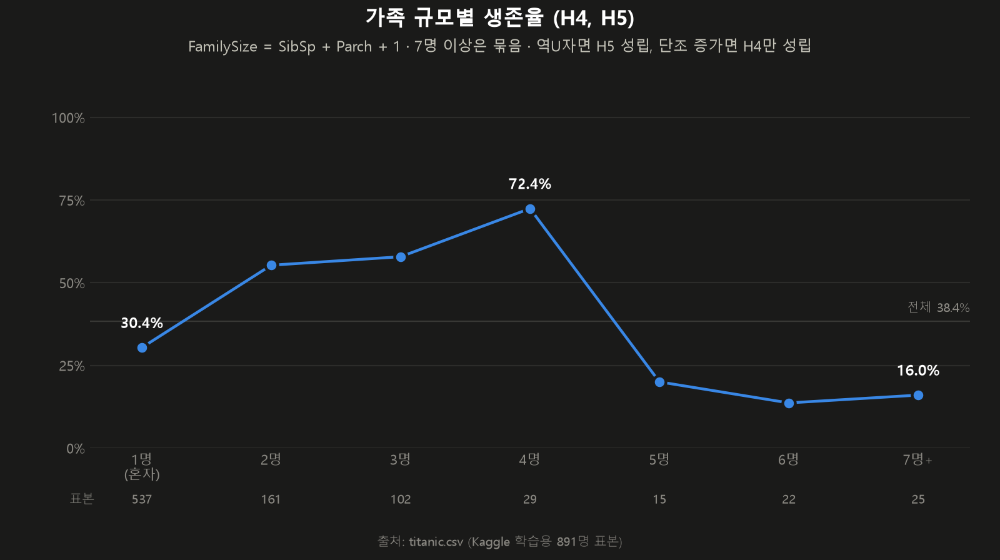
| 가족 규모 | 1명(혼자) | 2명 | 3명 | 4명 | 5명 | 6명 | 7명+ |
|---|---|---|---|---|---|---|---|
| 생존율 | 30.4% | 55.3% | 57.8% | 72.4% | 20.0% | 13.6% | 16.0% |
| 표본 | 537 | 161 | 102 | 29 | 15 | 22 | 25 |
가설: Fare는 Pclass를 통제하면 추가 설명력이 없다
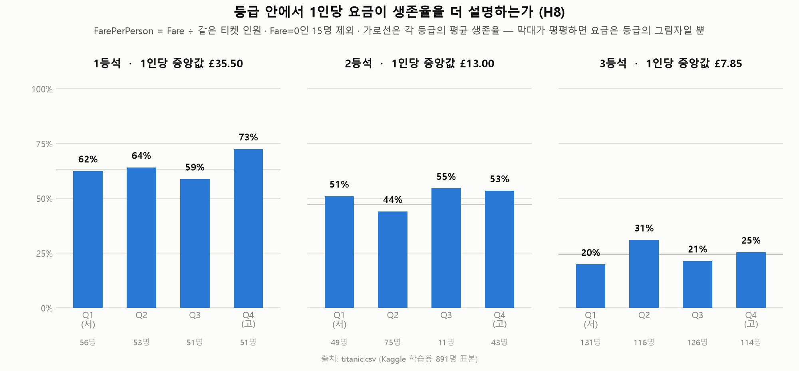
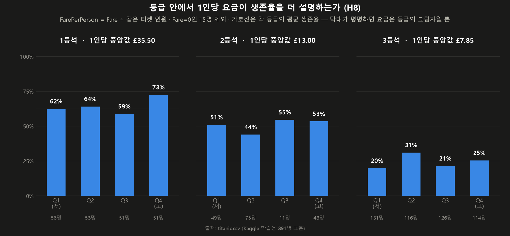
| 등급 | 1인당 중앙값 | Q1 (저) | Q2 | Q3 | Q4 (고) |
|---|---|---|---|---|---|
| 1등석 | £35.50 | 62.5% (56) | 64.2% (53) | 58.8% (51) | 72.5% (51) |
| 2등석 | £13.00 | 51.0% (49) | 44.0% (75) | 54.5% (11) | 53.5% (43) |
| 3등석 | £7.85 | 19.8% (131) | 31.0% (116) | 21.4% (126) | 25.4% (114) |
Fare는 가족 규모와 교락되어 있었다.가설: 승선 항구의 생존율 차이는 등급 구성으로 설명된다
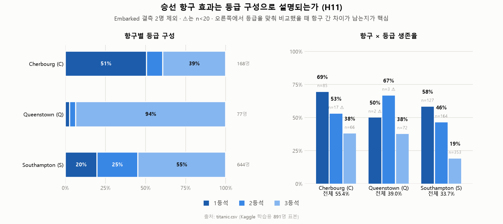
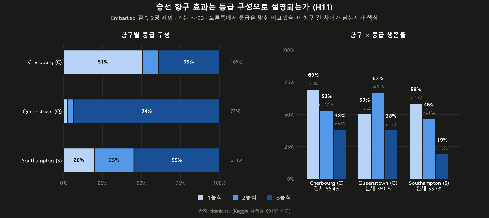
| 항구 | 전체 | 1등석 | 2등석 | 3등석 | 등급 구성 |
|---|---|---|---|---|---|
| Cherbourg (C) | 55.4% (168) | 69.4% (85) | 52.9% (17) | 37.9% (66) | 1등석 51% |
| Queenstown (Q) | 39.0% (77) | 50.0% (2) | 66.7% (3) | 37.5% (72) | 3등석 94% |
| Southampton (S) | 33.7% (644) | 58.3% (127) | 46.3% (164) | 19.0% (353) | 3등석 55% |
가설: Cabin의 갑판 문자(A~G)는 생존율과 연관이 있다
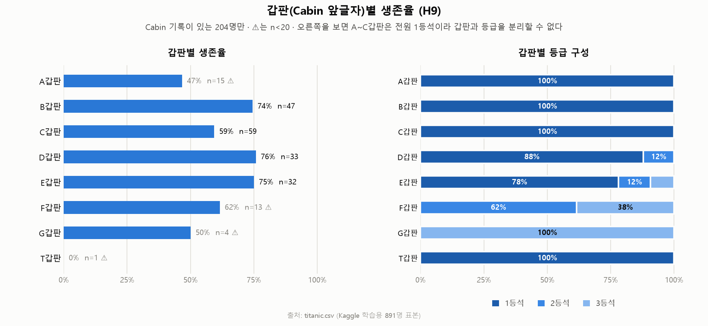
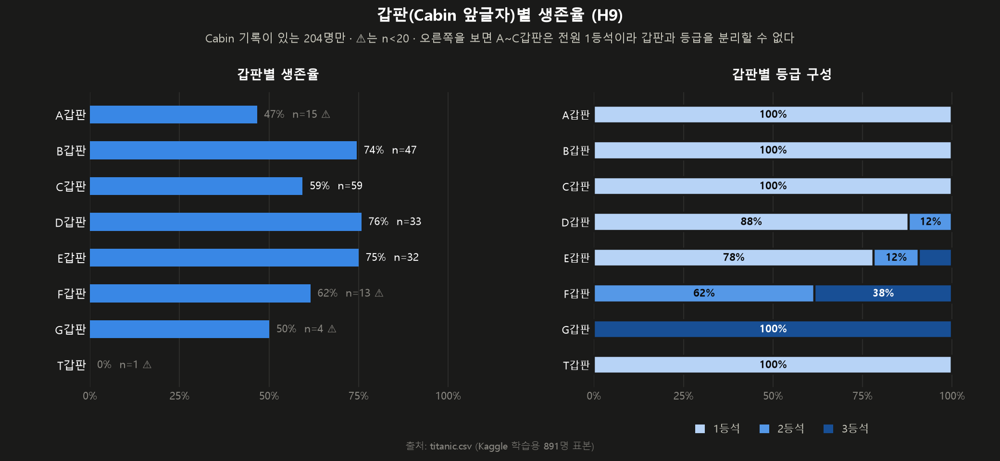
| 갑판 | 인원 | 생존율 | 등급 구성 |
|---|---|---|---|
| A | 15 | 46.7% | 1등석 100% |
| B | 47 | 74.5% | 1등석 100% |
| C | 59 | 59.3% | 1등석 100% |
| D | 33 | 75.8% | 1등석 88% / 2등석 12% |
| E | 32 | 75.0% | 1등석 78% / 2등석 12% / 3등석 9% |
| F | 13 | 61.5% | 2등석 62% / 3등석 38% |
| G | 4 | 50.0% | 3등석 100% |
| T | 1 | 0.0% | 1등석 100% |
가설: Mrs 중 Parch > 0인 여성(어머니)의 생존율은 다른 성인 여성과 다르다
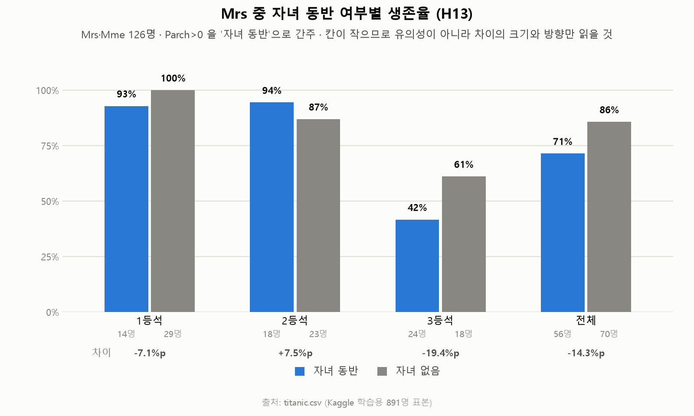
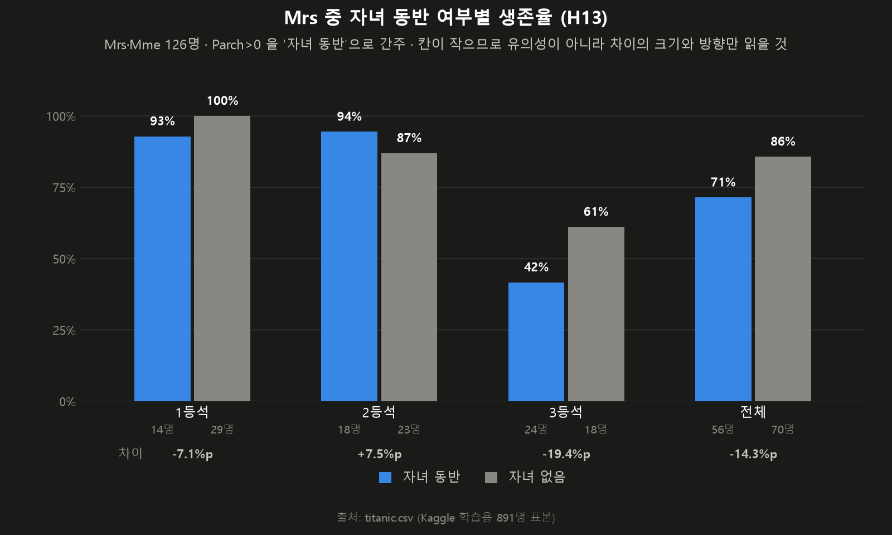
| 등급 | 자녀 동반 | 자녀 없음 | 차이 |
|---|---|---|---|
| 1등석 | 92.9% (14) | 100% (29) | −7.1%p |
| 2등석 | 94.4% (18) | 87.0% (23) | +7.5%p |
| 3등석 | 41.7% (24) | 61.1% (18) | −19.4%p |
| 전체 | 71.4% (56) | 85.7% (70) | −14.3%p |
13개 가설 중 10개를 차트로 검토했다
| 가설 | 판정 | 근거와 남은 일 |
|---|---|---|
| H1 어린이 우대 | 부분 지지 | 남아에게만 작동. 여아는 성인 여성과 차이 없음 |
| H2 3등석에서 약함 | 부분 지지 | 방향 일치하나 1등석 어린이 n=1, 3 |
| H3 Master = 나이 대리 | 미검증 | 나이 분포 그림 필요 — 차트 미작성 |
| H4 혼자면 불리 | 방향 일치 | 30.4% vs 38.4%. 성별 통제 필요 |
| H5 역U자 | 확인 | 4명 정점 72.4% 후 급락. 등급 통제 필요 |
| H6 SibSp ≠ Parch | 미검증 | 회귀 계수 비교가 본체 — 그림으로 불가 |
| H7 일행 단위 운명 | 지지 방향 | 2명 일행 68% 전원 일치. 순열검정 필요 |
| H8 요금은 등급의 그림자 | 지지 | 등급 내 4분위가 평평. 모델에서 접어도 무방 |
| H9 갑판 효과 | 접음 | A~C 전원 1등석 — 등급과 분리 불가 |
| H10 Cabin 결측이 피처 | 지지 | 세 등급 모두 같은 방향. 누출 점검 필요 |
| H11 항구 = 등급 구성 | 보류 | 3등석에서 18.9%p 잔존 — 다른 설명 필요 |
| H12 호칭 > 성별 | 지지 방향 | Mr vs Master 41.8%p. 모형 비교 필요 |
| H13 어머니 | 방향 불일치 | 전체 −14.3%p지만 등급별로 엇갈림 |
Sex, Pclass,
Title(호칭 파생), Age, HasCabin.FamilySize 또는
TicketGroupSize — 둘 중 하나만. 역U자를 살리려면 연속값이 아니라
구간(1 / 2–4 / 5+)으로 넣는 편이 낫다.Fare(H8), Deck(H9).
둘 다 Pclass와 거의 같은 정보다.HasCabin의 누출 가능성(H10),
Embarked가 무엇의 대리인지(H11).TicketGroupSize를 FamilySize보다 우선할 근거가 생긴다.SibSp vs Parch의 방향 차이를 한 번에 정리.Sex vs Title 모형 비교 (H12) — 호칭이 성별을 대체할 수 있는지.HasCabin 누출 점검 (H10) — 모델에 넣기 전 필수.Age 결측 177건을
호칭별 중앙값으로 대치할 근거가 된다.Age는 전부 "제외"로 처리했다.
대치 방식에 따라 H1의 결론은 달라질 수 있다.이 HTML은 같은 폴더의 PNG를 상대 경로로 참조한다 — 옮길 때는 폴더째 옮길 것
| 파일 | 내용 |
|---|---|
titanic_report.html | 이 보고서 |
titanic 데이터 설명.md | 컬럼 정의, 결측 현황, 데이터 읽을 때 주의점 |
titanic 분석 가설.md | 가설 13개 전문 — 근거 / 검증 방법 / 반증 조건 / 차트별 판독 |
| 파일 | 생성물 | 실행 |
|---|---|---|
hypothesis_viz.py | 가설 차트 10종 (라이트/다크 20장) | python hypothesis_viz.py [--dark] [--only age] |
survival_pie_by_sex_pclass.py | 성별 × 등급 파이 6개 | python survival_pie_by_sex_pclass.py [--dark] |
survival_pie_by_sex.py | 성별 파이 2개 | python survival_pie_by_sex.py [--dark] |
survival_pie.py | 전체 생존 파이 1개 | python survival_pie.py [--dark] |
| 이름 | 가설 | 파일 | 형식 |
|---|---|---|---|
age | H1 | viz_age_survival_*.png | 꺾은선 2계열 |
agegrid | H2 | viz_age_class_grid_*.png | 히트맵 6×5 |
title | H12 | viz_title_survival_*.png | 가로 막대 |
ticket | H7 | viz_ticket_group_*.png | 막대 + 100% 누적 |
cabin | H10 | viz_cabin_missing_*.png | 그룹 막대 |
family | H4, H5 | viz_family_size_*.png | 꺾은선 + 표본행 |
fare | H8 | viz_fare_quartile_*.png | 3패널 막대 |
embarked | H11 | viz_embarked_class_*.png | 100% 누적 + 그룹 막대 |
deck | H9 | viz_deck_survival_*.png | 가로 막대 + 100% 누적 |
mother | H13 | viz_mother_children_*.png | 그룹 막대 + 차이 |